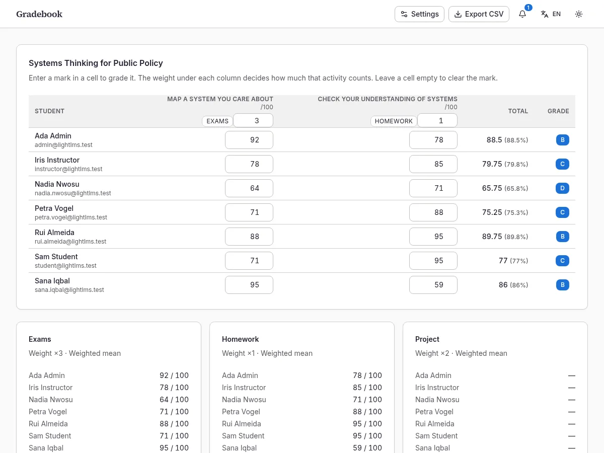
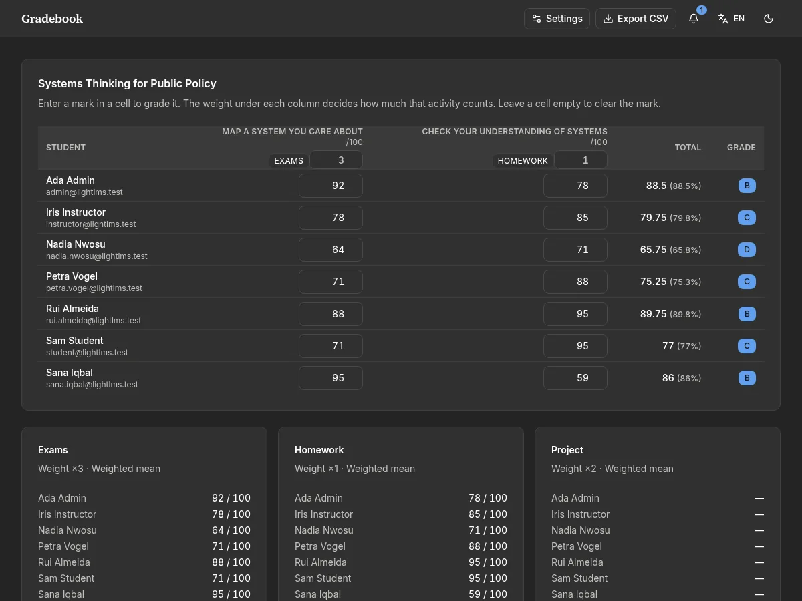
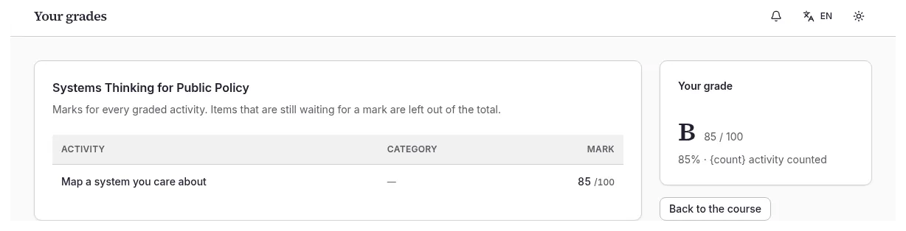
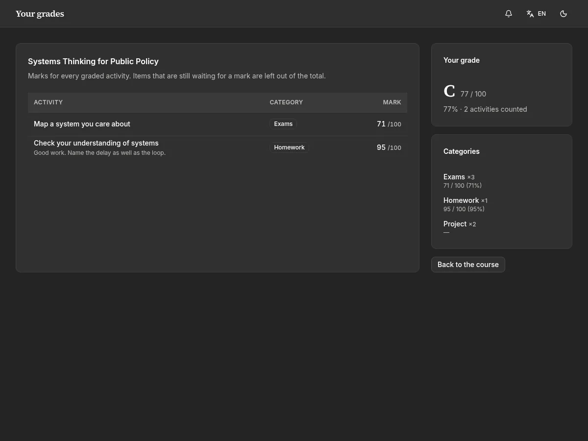
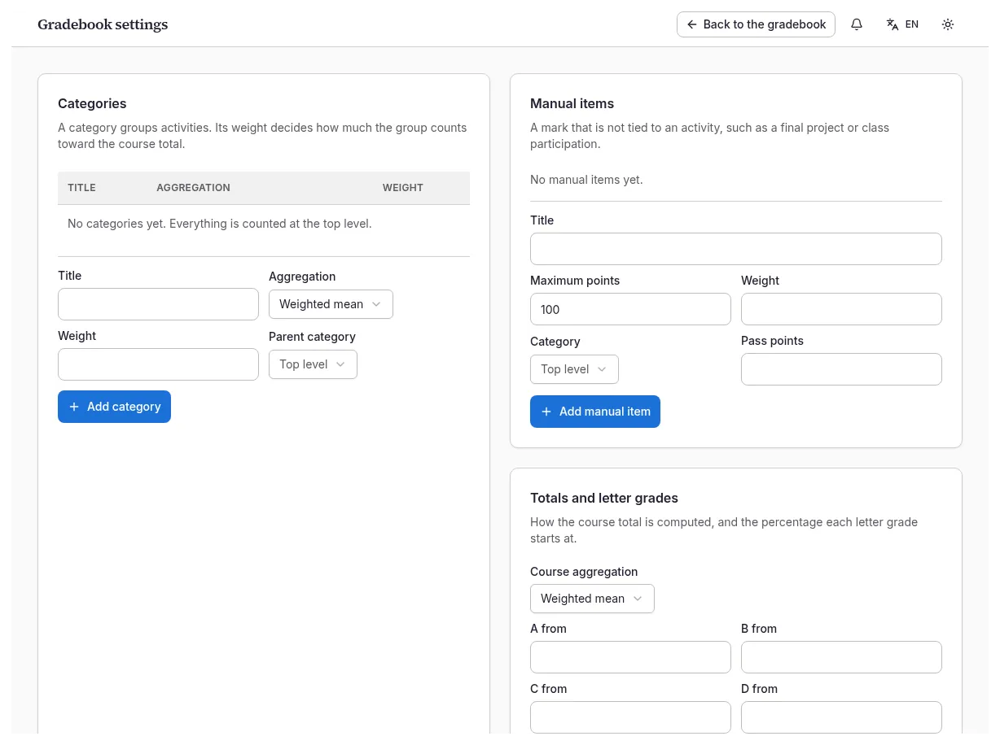
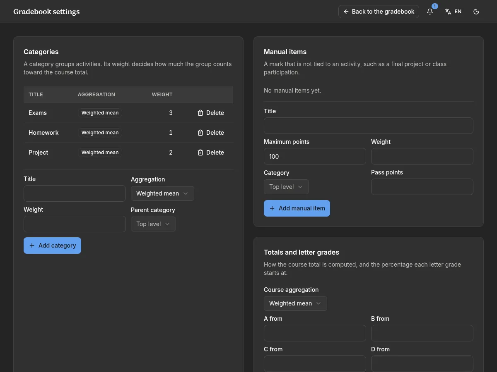

Using it
Assignments and quizzes
Both activities produce marks, and both marks land in the gradebook of the course. What differs is who does the marking.
Assignments
An assignment is written work. A learner hands in an attempt, and a teacher marks it with a score and a note.
| Setting | What it does |
|---|---|
| Attempt limit | How many times a learner may hand in. The limit is enforced on the server, not only in the interface. |
| Deadline | The due date of the activity. |
| Late policy | When late work is allowed. With it off, a hand-in after the deadline is refused. |
| Attachments | A learner may attach a file to the hand-in. The file is stored privately and served through a permission check. |
Marking an assignment writes to the gradebook and sends a notification to the learner.
Quizzes
A quiz holds questions, each with its own points.
| Question type | How it is marked |
|---|---|
| Multiple choice | Automatic. |
| Multiple select | Automatic. Every option has to be right. |
| True or false | Automatic. |
| Short answer | Read by a marker. |
| Essay | Read by a marker. |
An attempt with questions that need a person comes back partly marked, and the teacher sees a panel with the answers that still need a decision.
The correct answers never reach the browser. The learner receives the prompts and the options; the marking happens on the server.
A quiz also has an attempt limit, a time limit, and a pass mark. A scored attempt is mirrored into the gradebook.
The gradebook
The gradebook of a course shows every grade item and every mark. A teacher can mark inline, override a mark, and export the whole thing as CSV.


Grade items may belong to a category, and categories and items carry weights, so the final total is a weighted mean rather than a plain average.
Categories and weights
The total is computed in two layers. Every item rolls up into its category using the aggregation of that category, and then the top level categories and the items that have no category roll up into the course total. A category with a weight of three therefore counts three times as much as one with a weight of one.
Four aggregations are available: weighted_mean,
mean, sum and weighted_sum. The first
is the default.
The weight of an item is edited in the header of its column, so the shape of the sheet stays visible while the numbers change.
Manual items
A mark does not have to belong to an activity. A teacher can add a manual item for a final project or for class participation, with its own maximum points, weight and pass mark.
Letter grades
The course can also hand out a letter. The thresholds for A, B, C and D live in the course settings and are applied to the final percentage. The gradebook shows the letter next to the total, and the CSV export carries both the percentage and the letter.
An item that is left empty, hidden or locked does not count towards the total, and a mark that is excluded is skipped as well. The total only ever covers the work that was actually counted.
A learner sees the same page with only their own marks. The totals are calculated on the server, so nobody can read somebody else's mark by asking for it.




Audit
Every hand-in, every mark, every quiz attempt, and every change to the roster is written to the audit log with the person, the course, the before and after values, the address, and the browser. The log is under Administration.